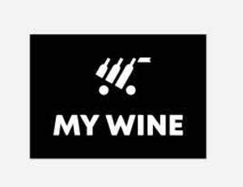

Trade Mark Journal No.2025/025 20 June 2025
UK00004213255 3 June 2025 (9,35,38,42)

- Class 9
- Software applications for mobile devices; Downloadable software applications for mobile devices; Computer software for use on mobile and cellular phones.
- Class 35
- Advertising, marketing and promotion services in relation to wine; Retail and wholesale services featuring wine; Provision of online marketplaces for buyers and sellers of wine.
- Class 38
- Providing user access to digital wine catalogs via mobile applications; Providing online forums and chatrooms for wine enthusiasts to share reviews and tasting notes; Transmission of electronic wine tasting notes and reviews via mobile applications; Electronic transmission of personalized wine recommendations; Transmission of multimedia content, including images, videos, and audio, relating to wine; Providing access to online wine communities and social networks via mobile applications; Providing access to wine-related podcasts, webinars, and audio content via mobile applications; Electronic bulletin board services enabling users to post and share wine reviews and ratings; Transmission of real-time wine price information and availability via mobile applications.
- Class 42
- Design and development of software applications for mobile devices relating to wine; Software as a service (SaaS) featuring software for wine cataloging, recommendations, and reviews; Hosting of software applications and platforms relating to wine; Maintenance and updating of software for mobile applications relating to wine; Providing temporary use of non-downloadable software for accessing digital wine catalogs and guides; Development and maintenance of databases for wine-related information and tasting notes; Providing temporary use of online non-downloadable software for personalized wine recommendations; Cloud computing services featuring software for wine management and tasting notes; Technical support services for mobile applications relating to wine, including troubleshooting and bug fixing; Providing temporary use of online non-downloadable software featuring artificial intelligence for personalized wine recommendations and tasting notes; Design and development of artificial intelligence software for wine recommendations, cataloging, and user reviews; Providing temporary use of online non-downloadable software featuring machine learning algorithms for analyzing user preferences and recommending wine.
Norpexal Holding SA
Representative: Nataliya Pidlubna Fausch